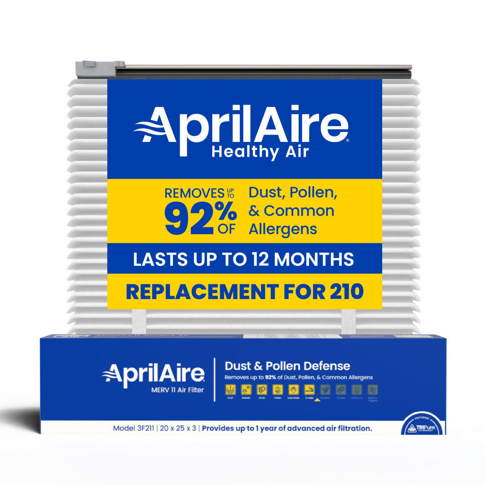

The familiar format
Classic AprilAire
Model numbers such as 210, 410, and 510.
Classic 4-inch filter platform.
Match the filter to the purifier cabinet.
Your familiar AprilAire filter has a new number. Find its TriPure replacement, understand the upgrade, and get the right fit the first time.
Independent guidance by NED Air Filters. Built around your model number.

Look on your old filter or the label inside the purifier cabinet door. Enter a filter number like 210, or a cabinet model like 2410.
Try 210, 410, 513, or 2210.
Older 6-inch Space-Gard cabinets may need an earlier conversion kit. Confirm your cabinet configuration before buying.
Find the UK kit that replaces your classic MERV 11 or 13 filter. Each kit pairs a TriPure filter with matching upgrade rails.
As an Amazon Associate I earn from qualifying purchases. Amazon links below are affiliate links. Confirm the model and package contents on Amazon before ordering.
| Classic filter | TriPure kit | Rating | Cabinet family* | Shop |
|---|
*Cabinet numbers are model identifiers, not dimensions. Match the exact cabinet and any required previous conversion. A generic filter with the same nominal size is not automatically interchangeable.
AprilAire is transitioning its classic 4-inch MERV 11 and MERV 13 filters to the 3-inch TriPure platform. The UK kit bridges the change with rails made for compatible existing cabinets.
Model numbers such as 210, 410, and 510.
Classic 4-inch filter platform.
Match the filter to the purifier cabinet.
210 → UK211 · 410 → UK411 · 510 → UK511.
New 3-inch filter plus one-time rails.
Compatible existing cabinet stays in place.
Check your old filter number and cabinet model. Choose the matching UK kit and confirm compatibility in the manufacturer’s listing.
Turn the HVAC system off. Follow the instructions for your kit to remove the old filter, fit the rails, and insert the new filter in the indicated airflow direction.
Future changes use the matching TriPure filter-only replacement. For example, UK211 transitions to 3F211. Verify the exact refill model before ordering.
Three common MERV 11 transitions. Need MERV 13 or another model? Every linked option is in the chart above.
Affiliate links · Current pricing, availability, seller, and package contents are shown on Amazon.
The right number matters more than a familiar-looking size.
UK211 is the replacement upgrade kit for the 210. It includes a new 3-inch TriPure MERV 11 filter and the one-time rails needed for compatible cabinets. It is a new format, so follow the kit instructions.
The matching UK kit uses upgrade rails to adapt a compatible AprilAire cabinet. Do not place a loose generic 3-inch filter into a 4-inch cabinet. Older 6-inch cabinets must already have the required conversion where specified.
No. The UK kit is the one-time upgrade. Keep the installed rails and buy the correct TriPure filter-only refill for later replacements. Verify the refill model for your kit.
Do not assume a direct UK match. Older 201/401 configurations may require a separate cabinet conversion. Models such as 216, 416, and 516 are MERV 16; the MERV 11/13 UK kits shown here are not equivalent MERV 16 replacements. Ask NED or AprilAire to confirm your setup.
Inspect it regularly and follow the manufacturer’s instructions and your HVAC professional’s guidance. Dust, pets, construction, and system runtime can shorten useful life. Replace sooner if it is loaded or airflow is affected.
Yes. Shop NED Air Filters for available AprilAire options, or text a photo of the filter and cabinet label to (210) 960-7723 for help. Ask about delivery and installation in San Antonio or nationwide shipping.
Text a photo of your current filter and purifier cabinet label. We’ll help you identify the right replacement before you order.